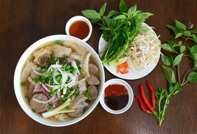
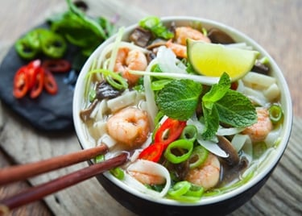
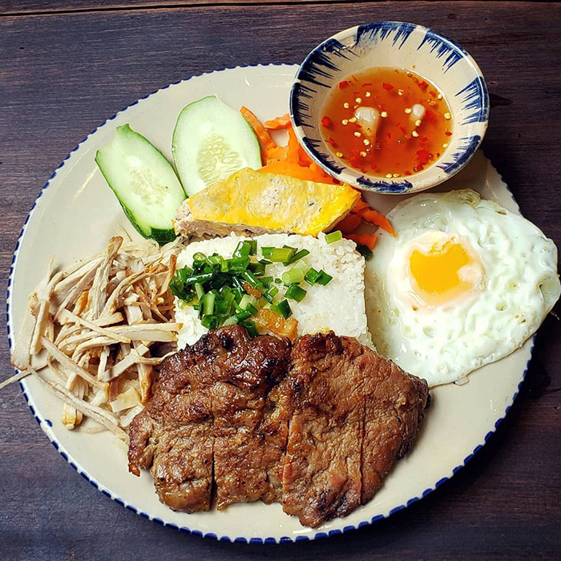
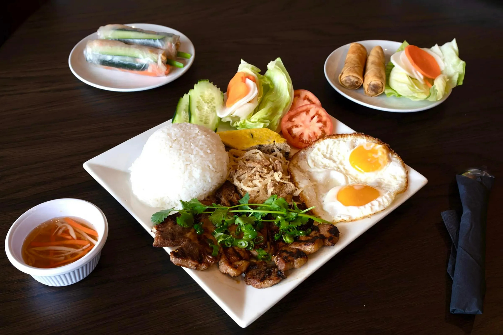
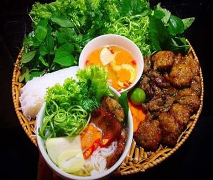
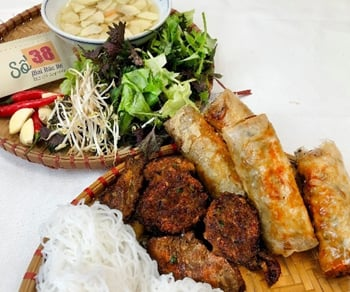

Vietnamese food is celebrated for its fresh herbs, complex flavours, and delicate balance of sweet, sour,
salty and spicy elements. I'm excited to introduce you to some distinctive Vietnamese dishes, sharing
their visual appeal, recipes, and reviews to give you a taste of their unique flavors and culinary experience.
A Vietnamese dish consisting of grilled pork served with vermicelli noodles, fresh herbs, and a dipping sauce, celebrated for its balance of flavors and textures.
Phở
SOME IMAGES ABOUT PHỞ


DETAILED RECIPES TO MAKE PHỞ
Ingredients
• 2 large onions, peeled and halved
• 1 large piece of ginger, about 4 inches, sliced lengthwise and smashed
• 3-4 pounds of beef bones (such as oxtail, marrow, and knuckle bones)
• 2-3 pounds of beef brisket or chuck, thinly sliced
• 5-6 star anise pods
• 6-8 whole cloves
• 2-3 cinnamon sticks
• 1 black cardamom pod (optional)
• 1 tablespoon coriander seeds
• 1 tablespoon fennel seeds
• 1 tablespoon salt
• 1-2 tablespoons sugar
• ¼ cup fish sauce
• 1 pound dried flat rice noodles (bánh phở)
• Optional toppings: fresh herbs (cilantro, Thai basil, sawtooth herb), bean sprouts, lime wedges, sliced chili peppers, hoisin sauce, sriracha sauce
Instructions
1. Char the onions and ginger: Place the halved onions and sliced ginger on a baking sheet and broil in the oven until they are charred on all sides, about 10-15 minutes.
2. Prepare the broth: In a large stockpot, add the beef bones and cover with cold water. Bring to a boil and then reduce the heat to a simmer. Skim off any foam or impurities that rise to the surface. Add the charred onions and ginger, star anise, cloves, cinnamon sticks, black cardamom pod (if using), coriander seeds, and fennel seeds. Simmer the broth uncovered for at least 4-6 hours, occasionally skimming off any fat or impurities that accumulate on the surface.
3. Season the broth: Once the broth has simmered for several hours and has developed a rich flavor, season it with salt, sugar, and fish sauce to taste. Adjust the seasoning as needed to achieve a balanced flavor profile.
4. Prepare the noodles: While the broth is simmering, soak the dried rice noodles in hot water for about 20-30 minutes, or until they are soft but still slightly firm. Drain the noodles and rinse them under cold water.
5. Prepare the beef: Thinly slice the beef brisket or chuck against the grain into paper-thin slices. You can partially freeze the beef for easier slicing.
6. Assemble the phở bowls: Divide the soaked rice noodles among serving bowls. Top each bowl with slices of raw beef. Ladle the hot broth over the noodles and beef, ensuring that the beef cooks in the hot broth. The beef should turn opaque and cooked within a few minutes.
7. Serve the phở: Garnish the bowls of phở with fresh herbs, bean sprouts, lime wedges, sliced chili peppers, hoisin sauce, and sriracha sauce. Serve immediately and enjoy!
REVIEW FROM STRANGERS
Cơm tấm
SOME IMAGES ABOUT CƠM TẤM


DETAILED RECIPES TO MAKE CƠM TẤM
INGREDIENTS
1. For the broken rice:
• 2 cups broken rice (cơm tấm)
• Water for rinsing and cooking
2. For the grilled pork:
• 500g pork shoulder or pork chops, thinly sliced
• 3 cloves garlic, minced
• 2 shallots, minced
• 2 tablespoons sugar
• 2 tablespoons fish sauce
• 1 tablespoon soy sauce
• 1 tablespoon honey or malt syrup
• 1 tablespoon vegetable oil
• Ground black pepper to taste
3. For the egg meatloaf (chả trứng):
• 3 eggs
• 1 tablespoon fish sauce
• 1 tablespoon sugar
• 1/2 teaspoon ground white pepper
• 1/2 cup diced pork belly or ground pork
• Vegetable oil for frying
4. For the accompaniments:
• Fresh vegetables such as cucumber slices, tomato wedges, lettuce leaves
• Pickled daikon and carrots (đồ chua)
• Fish sauce dipping sauce (nước mắm)
• Optional: sliced green onions, chopped cilantro, sliced chili peppers for garnish
Instructions
1. Prepare the broken rice: • Rinse the broken rice under cold water until the water runs clear.
• Cook the rice according to package instructions or using a rice cooker. Once cooked, fluff the rice with a fork and keep warm.
2. Marinate the pork: • In a bowl, combine minced garlic, minced shallots, sugar, fish sauce, soy sauce, honey or malt syrup, vegetable oil, and ground black pepper. Mix well.
• Add the thinly sliced pork to the marinade, ensuring each piece is coated evenly. Marinate for at least 30 minutes or overnight in the refrigerator for more flavor.
3. Make the egg meatloaf (chả trứng): • In a bowl, whisk together eggs, fish sauce, sugar, and ground white pepper until well combined.
• Stir in diced pork belly or ground pork.
• Heat a non-stick skillet over medium heat and add a little vegetable oil.
• Pour the egg mixture into the skillet and cook until set and golden brown on both sides, flipping halfway through. Once cooked, transfer to a cutting board and slice into strips.
4. Grill the pork: • Preheat a grill or grill pan over medium-high heat.
• Grill the marinated pork slices for 2-3 minutes on each side, or until cooked through and slightly charred. Remove from the grill and set aside.
5. Assemble the cơm tấm: • Divide the cooked broken rice among serving plates.
• Arrange the grilled pork slices and egg meatloaf strips on top of the rice.
• Serve with fresh vegetables, pickled daikon and carrots, and fish sauce dipping sauce on the side.
• Garnish with sliced green onions, chopped cilantro, and sliced chili peppers if desired.
• Enjoy your delicious homemade cơm tấm! Adjust the ingredients and accompaniments according to your taste preferences.
REVIEW FROM STRANGERS
Bún chả
SOME IMAGES ABOUT BÚN CHẢ


DETAILED RECIPES TO MAKE BÚN CHẢ
INGREDIENTS
1. For the pork patties (chả):
• 500g ground pork
• 3 cloves garlic, minced
• 2 shallots, minced
• 2 tablespoons fish sauce
• 2 tablespoons sugar
• 1 tablespoon soy sauce
• 1 tablespoon vegetable oil
• Ground black pepper to taste
2. For the marinade:
• 3 tablespoons fish sauce
• 3 tablespoons sugar
• 3 tablespoons rice vinegar
• 3 cloves garlic, minced
• 1-2 Thai bird's eye chili peppers, minced (optional)
• 1 cup warm water
3. For serving:
• 250g dried rice vermicelli noodles (bún)
• Fresh herbs: mint, cilantro, Thai basil
• Lettuce leaves
• Pickled carrots and daikon (đồ chua)
• Sliced cucumbers
• Sliced chili peppers (optional)
• Lime wedges
• Fish sauce dipping sauce (nước mắm)
INSTRUCTIONS
1. Prepare the pork patties (chả): • In a mixing bowl, combine ground pork, minced garlic, minced shallots, fish sauce, sugar, soy sauce, vegetable oil, and ground black pepper. Mix well until all ingredients are thoroughly incorporated.
• Shape the pork mixture into small patties, about 1.5 inches in diameter.
• Heat a grill or grill pan over medium-high heat. Grill the pork patties for 3-4 minutes on each side, or until cooked through and lightly charred. Alternatively, you can bake the patties in a preheated oven at 200°C (400°F) for 15-20 minutes, flipping halfway through.
2. Prepare the marinade: • In a bowl, combine fish sauce, sugar, rice vinegar, minced garlic, Thai bird's eye chili peppers (if using), and warm water. Stir until the sugar is dissolved.
• Cook the rice vermicelli noodles:
• Bring a large pot of water to a boil. Add the rice vermicelli noodles and cook according to package instructions, usually about 4-5 minutes, or until tender but still slightly firm. Drain the noodles and rinse them under cold water to stop the cooking process. Drain well.
3. Assemble the bún chả bowls: • Divide the cooked rice vermicelli noodles among serving bowls.
• Arrange the grilled pork patties on top of the noodles.
• Add fresh herbs (mint, cilantro, Thai basil), lettuce leaves, pickled carrots and daikon, sliced cucumbers, and sliced chili peppers (if using) to each bowl.
• Serve with lime wedges and fish sauce dipping sauce on the side.
4. Enjoy: • To eat, dip the pork patties and noodles into the fish sauce marinade and enjoy with the fresh herbs and vegetables.